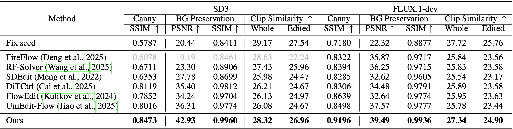
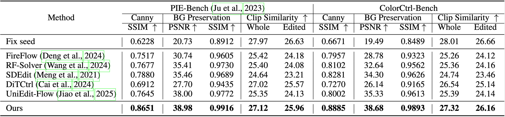

ColorCtrl: Training-Free Text-Guided Color Editing with Multi-Modal Diffusion Transformer
- Zixin Yin 1,2
- Xili Dai 4
- Ling-Hao Chen 3
- Deyu Zhou 4,6
- Jianan Wang 5
- Duomin Wang 6
- Gang Yu 6
- Lionel M. Ni 4,1
- Lei Zhang 2
- Heung-Yeung Shum 1
- 1 The Hong Kong University of Science and Technology
- 2 International Digital Economy Academy
- 3 Tsinghua University
- 4 The Hong Kong University of Science and Technology (Guangzhou)
- 5 Astribot
- 6 StepFun


Our method, ColorCtrl with FLUX.1-dev, edits colors across multiple materials while preserving light-matter interactions. For example, in the fourth case, the ball's color, its water reflection, specular highlights, and even small droplets on the glass have all been changed. It also enables fine-grained control over the intensity of specific descriptive terms.
Abstract
Text-guided color editing in images and videos is a fundamental yet unsolved problem, requiring fine-grained manipulation of color attributes, including albedo, light source color, and ambient lighting, while preserving physical consistency in geometry, material properties, and light-matter interactions. Existing training-free methods offer broad applicability across editing tasks but struggle with precise color control and often introduce visual inconsistency in both edited and non-edited regions. In this work, we present ColorCtrl, a training-free color editing method that leverages the attention mechanisms of modern Multi-Modal Diffusion Transformers (MM-DiT). By disentangling structure and color through targeted manipulation of attention maps and value tokens, our method enables accurate and consistent color editing, along with word-level control of attribute intensity. Our method modifies only the intended regions specified by the prompt, leaving unrelated areas untouched. Extensive experiments on both SD3 and FLUX.1-dev demonstrate that ColorCtrl outperforms existing training-free approaches and achieves state-of-the-art performances in both edit quality and consistency. Furthermore, our method surpasses strong commercial models such as FLUX.1 Kontext Max and GPT-4o Image Generation in terms of consistency. When extended to video models like CogVideoX, our approach exhibits greater advantages, particularly in maintaining temporal coherence and editing stability. Finally, our method also generalizes to instruction-based editing diffusion models such as Step1X-Edit and FLUX.1 Kontext dev, further demonstrating its versatility.
Overview
Pipeline of ColorCtrl. (a) Reviews the attention mechanism in MM-DiT blocks. (b) Enables effective color editing while maintaining structural consistency. (c) Preserves colors in non-editing regions. (d) Applies attribute re-weighting to specific word tokens.
Comparison with Methods (Images)
We show benchmark results on both SD3 and FLUX.1-dev below, comparing our method with other training-free baselines. Our method achieves state-of-the-art performance, delivering superior results in both preserving source content and executing accurate edits.
 Quantitative image results compared with training-free methods on PIE-Bench. Results for FireFlow on SD3 are omitted due to consistency worse than that obtained using fixed seeds.Quantitative image results compared with training-free methods on ColorCtrl-Bench. Results for FireFlow on SD3 are omitted due to consistency worse than that obtained using fixed seeds.
We compare our method (based on SD3 and FLUX.1-dev) with two commercial models: FLUX.1 Kontext Max and GPT-4o Image Generation. Despite being based on open-source models, our approach achieves superior layout and detail consistency, as well as better preservation of non-edited regions. While the CLIP similarity scores of our method are slightly lower, visual results in Fig.~\ref{fig:gallery} reveal that the commercial models often rely on over-saturated, unrealistic edits to better align with prompts. For example, in the top row, FLUX.1 Kontext Max recolors the entire mouse, including its magic wand, in solid purple, while GPT-4o produces a dark, dissonant shade. In contrast, our method applies a harmonious color. In the second row, only our method preserves the shirt's semi-transparency, whereas the commercial models render it as opaque yellow, ignoring material properties. In the third row, our method respects the muted tone of "green tea" and edits the ice cream to a natural reddish-brown "red tea" color. The commercial models, however, apply an unnaturally pure red. In the final row, although the prompt requests a "yellow kitten", no naturally occurring cat has a truly pure yellow coat. Our method instead generates a kitten with the closest plausible fur color, aligned with real-world appearances, unlike the commercial models, which apply flat, high-saturation tones that appear unnatural. These results demonstrate that higher CLIP similarity does not necessarily indicate better edit quality. It often stems from prompt overfitting while compromising realism and consistency. Overall, our method consistently produces more faithful, controllable edits, even built on open-source models.
Quantitative image results compared with commercial models on PIE-Bench.Quantitative image results compared with commercial models on ColorCtrl-Bench.
Comparison with Methods (Videos)
We presents benchmark results on CogVideoX-2B. Since FLUX.1 Kontext Max and GPT-4o do not support video editing, we compare only with other training-free methods. Similar to image editing, our method outperforms all baselines. Notably, the performance gap becomes even more pronounced due to the added temporal dimension.
 Quantitative video results compared with baselines on PIE-Bench and ColorCtrl-Bench.Here is a example of changing the ice-cream from "green tea" to "red tea" on PIE-Bench and changing the backpack from "green" to "yellow" on ColorCtrl-Bench.
Source
Ours
DiTCtrl
UniEdit-Flow
FireFlow
RF-Solver
SDEdit
Source
Ours
DiTCtrl
UniEdit-Flow
FireFlow
RF-Solver
SDEdit
Attribute Re-Weighting Analysis
The results below show that our method not only supports re-weighting a single attribute within the same prompt, but also allows adjusting attribute strength across different prompts (second row). Moreover, our method can re-weight multiple attributes simultaneously (third row). Overall, these results demonstrate that our method enables smooth and controllable transitions in attribute strength, while preserving structural consistency across the image and maintaining color fidelity in non-edited regions, on both SD3 and FLUX.1-dev.
Generalization to Instruction-based Editing Diffusion Models
In addition to text-to-image and text-to-video models, ColorCtrl is also compatible with instruction-based editing diffusion models, such as Step1X-Edit and FLUX.1 Kontext dev. Given a real input image and a target editing instruction, the model performs edits accordingly. However, performing a second round of editing using the original model alone often leads to structural inconsistencies, such as distortions or shifts in shadows and edges. By incorporating our method, the model can further refine color edits while preserving structural fidelity. Compared to using the base model alone, our approach achieves better outline consistency and improved preservation of subtle visual cues like shadows.
Real Image Editing
To apply ColorCtrl to real images, we integrate UniEdit-Flow for inversion and replace the original editing module with our method. The results demonstrate that our approach generalizes well to real-world inputs on both SD3 and FLUX.1-dev, preserving fine-grained consistency (\textit{e.g.}, subtle fabric wrinkles and shadows) while delivering strong editing performance. Notably, in the top row, even when editing black clothing, ColorCtrl accurately distinguishes material shading from cast shadows, resulting in illumination-consistent edits.
Ablation Study
Starting from fixed random seed generation, we observe the highest CLIP similarity due to the lack of consistency constraints. However, this comes at the cost of very low scores in Canny SSIM, as well as PSNR and SSIM in non-edited regions, indicating poor structural and visual consistency. Introducing the structure preservation component significantly improves all consistency metrics, suggesting that the geometric and material attributes are effectively maintained, as also illustrated in Fig.~\ref{fig:editing_and_mask}. Adding the color preservation component completes our method, which further enhances consistency, particularly in non-edited regions, while sacrificing almost no CLIP similarity. Overall, the results validate the effectiveness of each component in our method.
Ablation study evaluating the effectiveness of each component on PIE-Bench.Citation
@article{yin2025training,
title={Training-Free Text-Guided Color Editing with Multi-Modal Diffusion Transformer},
author={Zixin Yin, Xili Dai, Ling-Hao Chen, Deyu Zhou, Jianan Wang, Duomin Wang, Gang Yu, Lionel M. Ni, Lei Zhang and Heung-Yeung Shum},
journal={arXiv preprint arXiv:},
year={2025}
}
Acknowledgements
We thank Yukai Shi, Xuan Ju, Guanlong Jiao, Shihao Zhao, Xianfang Zeng, Huaizhe Xu, and Bojia Zi, for the advice and discussion to improve the paper.
The website template was adapted from TH-PAD.